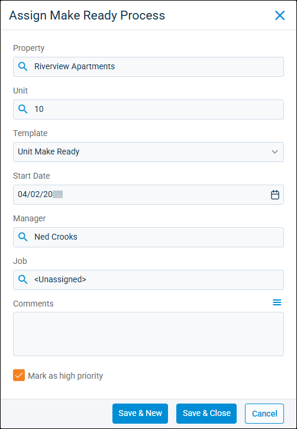

Source: https://rmxhelp.rentmanager.com/Topics/Express/Action/Make-Ready-Process-Assign.htm
Assign a Make Ready Process
Time, effort, and money are expended after a move out to make your units ready and available for the next tenant. Rent Manager offers the make-ready tool to help prepare vacant units for occupancy and to give an up-to-date visual representation of the unit turnover process. The Make Ready board displays units that are assigned a make-ready process with color-coded statuses for the associated service issues and inspections.
When a unit is added to the Make Ready board, each service issue or inspection of the make-ready template is generated, assigned to the unit, and displayed in the associated column of the make-ready action.
Related Privileges
| Group | Privilege | Column |
|---|---|---|
| Properties/Units | Make ready board | View |
| Make ready process | Add, View |
For more information, refer to Control User Access.
To assign a make-ready process to a unit, do the following:
-
Go to
 arrow_forward Services arrow_forward Make Ready arrow_forward Make Ready Board.
arrow_forward Services arrow_forward Make Ready arrow_forward Make Ready Board.
The Make Ready board displays. -
On the action bar to the right, click
 .
.
-
Enter the information in the following fields:
Field Description Property
The property where the make-ready process is scheduled.
Unit
The unit where the make-ready process is scheduled.
Template
The template of actions to perform for this make-ready process. Only templates assigned to the Property display in the list. For more information, refer to Make Ready Templates (Page).
Start Date
The date that the new make-ready process is scheduled to begin. By default, tomorrow's date populates.
Manager
Related Privileges
Only users who have the following privilege display in the list:
Group Privilege Column Properties/Units Make ready board View For more information, refer to Control User Access.
The active user to oversee the make-ready process.
Job
If applicable, link the make-ready process to a job so all expenses and service issues associated with the make-ready process are tracked within the job costing tool. For more information, refer to Jobs (Page).
Related Preferences
This field displays only when Enable job costing is checked in system preferences. For more information, refer to General Options (System Preferences).
Comments
Any additional details to display on the Make Ready board in the process's Description field.
Mark as high priority
Check to pin the make-ready process to the top of the board.
-
Click Save & Close to complete the make-ready assignment process and close the pop-up. Alternatively, click Save & New to finish adding the make-ready process and refresh the pop-up to add another process.